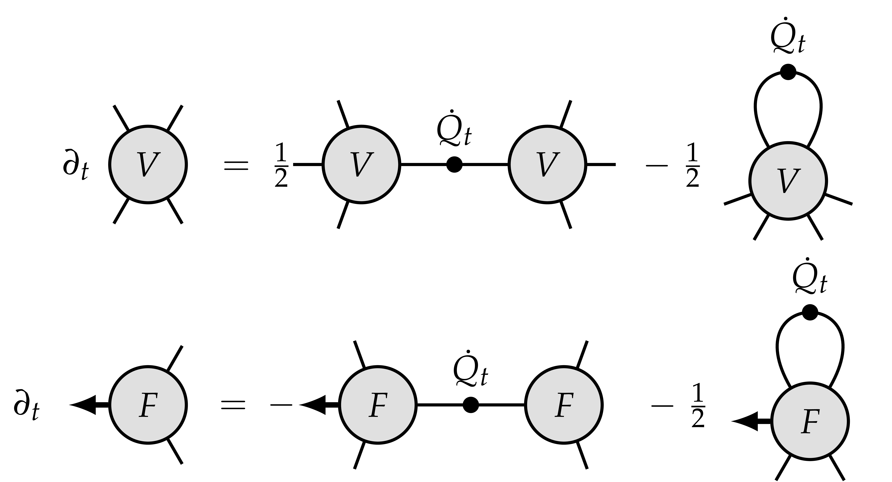
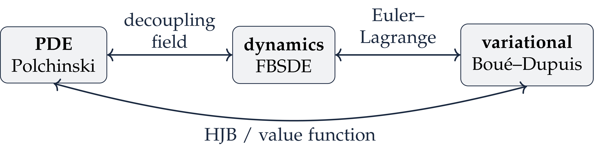
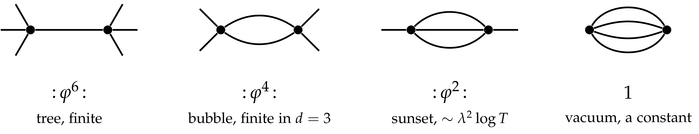

\(\mathbb{T}^2\),
heat profile, same noise; each panel in its own units. The force is
shown to first order in \(\lambda\): \(F_t
= - 4 \lambda H_3 (\Phi_t ; c_t)\).
A Constructive Introduction to Quantum Field Theory
Forward–backward equations
Massimiliano Gubinelli | University of Oxford
SISSA lectures, Lecture 4 (provisional) — notes: Lecture 4, §§7–9, Appendices A–B
So far. Stochastic quantisation of the GFF; the field at resolution \(t\) is a martingale of smooth fields; observables are martingales in the filtration of finite-resolution measurements.
Today. Interactions, still indexed by the resolution \(t \in [0, T]\).
Generate the measure three ways: renormalisation, optimal control, filtering.
They meet in one system for a field and a force: the force coordinates.
Potentials: the value function generates them; Legendre; Wetterich.
Observables, and the field equation with its sub-Gaussian noise.
Caveat. Statements marked
Fix \(V_T\) and \(\nu_T \propto \mathrm{e}^{- V_T} \mu^{Q_T}\). Let \(S_t = Q_T - Q_t\), the covariance still unresolved at resolution \(t\).
Renormalisation. Split the covariance into shells and integrate them out. At every resolution the field is again a Gibbs measure, driven by an effective force.
Optimal control. Steer the Gaussian field by a drift, at the least cost. The effective potential is the value function, and the Polchinski equation is the dynamic programming equation.
Filtering. Measure the terminal field with increasing precision. The conditional law is the posterior, and the regulator is the information gained.
They produce the same process.
Three ways to generate the interacting measure
Lecture 4
Finite volume \(\mathbb{T}^d_L\), terminal resolution \(T < \infty\) (UV cutoff), interaction \(V_T\) bounded below, e.g.
Definition.
The interaction felt at resolution \(t\) once the scales \([t, T]\) are integrated out; \(V_0 (0) = - \log Z_T\) is the free energy.
Proposition.
At every resolution the field is again a Gibbs measure: reference \(Q_t\), potential \(V_t\).
The measure-valued martingale \(t \mapsto \mu_t^{X_t}\) goes from \(\nu_T\) (\(t = 0\)) to \(\delta_{X_T}\) (\(t = T\)): a stochastic localisation of \(\nu_T\) (Eldan), adapted to the covariance profile.
Proof of the marginals. Under \(\mathbb{P}_0\), \(X_T = X_t + (X_T - X_t)\) with independent increment \(\sim \mu^{Q_{T, t}}\), so
Theorem.
The effective force \(F\) is a \(\mathbb{P}\)-martingale: an observable field of the interacting theory.
Proof. Density process \(M_t = Z_T^{- 1} \mathrm{e}^{- V_t (X_t)}\). It is a martingale, so by Itô it has no drift, \(\mathrm{d} M_t = - M_t \langle DV_t (X_t), \dot{Q}_t^{1 / 2} \mathrm{d} W_t \rangle\). Girsanov: \(W^{\mathbb{P}}_t = W_t + \int_0^t \dot{Q}_s^{1 / 2} DV_s (X_s) \hspace{0.17em} \mathrm{d} s\). Finally \(DV_t (\phi) = \mu_t^{\phi} (DV_T)\).
Read as an equation for an unknown pair \((\Phi, F)\):
The field is driven forward by a force determined backward from the terminal field.
No Polchinski equation needed; \(\nu_T = \text{Law} (\Phi_T)\) from the solution.
Strategy: solve with renormalised \(V_T\), estimates uniform in \(T\) and volume, take limits.
\(\Phi\) is not an observable (a semimartingale); observables are built from the noise and from \(F\).
\(\mathbb{T}^2\),
heat profile, same noise; each panel in its own units. The force is
shown to first order in \(\lambda\): \(F_t
= - 4 \lambda H_3 (\Phi_t ; c_t)\).
Theorem.
Proof. \(u_t = \mathrm{e}^{- V_t} = \mathrm{e}^{\frac{1}{2} \Delta_{Q_{T, t}}} u_T\), \(\Delta_Q = \text{Tr} (QD^2)\), solves the backward heat equation \(\partial_t u_t = - \frac{1}{2} \text{Tr} (\dot{Q}_t D^2 u_t)\). Insert \(D^2 u = (DV \otimes DV - D^2 V) u\).
Nonlinear term: generates new, nonlocal interactions (trees). |
Trace term: contracts pairs of fields with the shell covariance \(\dot{Q}_t \hspace{0.17em} \mathrm{d} t\): loops. |
A backward Hamilton–Jacobi equation; \(u = \mathrm{e}^{- V}\) is a Cole–Hopf transform.

Blob: derivatives of \(V_t\) or of the force. Dotted line: \(\dot{Q}_t\). Tree term and loop term; iterating gives the connected Feynman graphs.
\(\mathbb{H}_a\): adapted drifts with \(\mathbb{E} \int_0^T \|u_s \|^2 < \infty\); \(X^u = X + \int_0^{\cdot} \dot{Q}_s^{1 / 2} u_s \hspace{0.17em} \mathrm{d} s\).
Theorem.
Optimal feedback \(u^{\ast}_s = - \dot{Q}_s^{1 / 2} DV_s (X^{u^{\ast}}_s)\), \(\text{Law} (X^{u^{\ast}}_T) = \nu_T\). \(V_t\) is the value function; Polchinski is the HJB equation.
Proof (verification). Itô \(+\) Polchinski:
Euler–Lagrange. Perturb \(u \to u + \varepsilon v\):

Entropy. \(\frac{1}{2} \mathbb{E}_0 \int \|u\|^2 \geqslant \text{Ent} (\text{Law} (X^u) | \text{Law} (X))\): a pathwise lift of the Gibbs principle \(- \log Z_T = \inf_{\nu} \{ \int V_T \hspace{0.17em} \mathrm{d} \nu + \text{Ent} (\nu | \mu^{Q_T})\}\). Useful because adapted drifts can be built scale by scale, as functionals of \(X\).
Generating functional:
Bounds uniform in \(T\) \(\Rightarrow\) tightness, moments, identification of limits.
\(\Phi^4_3\). The leading drift \(u_s \approx - 4 \lambda \dot{Q}_s^{1 / 2} : X_s^3\): has divergent cost,
Change variables \(u = - 4 \lambda \dot{Q}^{1 / 2} : X^3 : + r\), then paracontrolled changes of variables: the singular terms become explicit polynomials in Wick powers of \(X\), cancelled by the counterterms, and the remainder is coercive. Uniform control in Besov/paracontrolled norms \(=\) construction of \(\Phi^4_3\). Barashkov–Gubinelli, Duke 2020; EJP 2021
Minimise \(J (u) = g (x_T) + \int_t^T \ell (x_s, u_s) \mathrm{d} s\) subject to \(\dot{x} = b (x, u)\), \(x_t = x\). Hamiltonian:
Theorem.
State forward, costate backward: a two-point boundary problem.
The costate is the Lagrange multiplier of the constraint \(\dot{x} = b\); an optimal control is a critical point of the Hamiltonian.
Next: why this holds, and what \(p\) is.
Pontryagin–Boltyanskii–Gamkrelidze–Mishchenko 1962.
First variation. Perturb \(u \to u + \varepsilon v\); the state varies by \(\xi = \partial_{\varepsilon} x\),
The costate equation \(\dot{p} = - \partial_x H\) is exactly what makes
Integrating, with \(p_T = - Dg (x_T)\):
HJB. Dynamic programming over \([t, t + \mathrm{d} t]\):
Hamilton's equations for \(H_{\ast}\) are its characteristics, and along them \(p_s = - DV (s, x_s)\): the costate is the force the future exerts on the present.
State \(=\) field, \(b = \dot{Q}_s^{1 / 2} u\), \(\ell = \frac{1}{2} \|u\|^2\), \(g = V_T\). \(H\) is maximised at \(u = \dot{Q}_s^{1 / 2} p\):
a free particle with mass matrix \(\dot{Q}_s^{- 1}\), and no dependence on the state \(x\).
Without noise: \(\dot{p} = 0\), \(\dot{x} = \dot{Q} p\): the shear \(\Sigma_t : (x, p) \mapsto (x + S_t p, p)\), with \(S_t := Q_T - Q_t\) the covariance still unresolved. All interaction is in \(p = - DV_T (x + S_t p)\): trees. HJB \(=\) Polchinski without the trace.
With noise (Bismut 1973, Peng 1990): the costate solves a BSDE
with \(\Upsilon \mathrm{d} W\) the price of adaptedness. Here \(\partial_x H = 0\): the costate is a martingale, \(p_t = - DV_t (X_t) = F_t\).
The Itô term turns HJB into Polchinski: quadratic part \(=\) trees, trace term \(=\) loops.
The FBSDE is the stochastic Hamiltonian system: field \(=\) state, force \(=\) costate.
Here \(\dot{S}_t = - \dot{Q}_t\), \(S_T = 0\). Optimal control \(u_t = \dot{Q}_t^{1 / 2} p_t\), with costate \(p_t = F_t\):
\(F_t (\cdot)\) is the decoupling field, \(F_t = F_t (\Phi_t)\); Burgers is its quasilinear PDE, and \(\Upsilon\) the martingale representation integrand of the costate.
In Burgers: transport term \(- DF [\dot{Q} F]\) \(\leftarrow\) drift of the state; Itô term \(- \frac{1}{2} \text{Tr} (\dot{Q} D^2 F)\) \(\leftarrow\) noise.
The shear \(\Sigma_t\) is the flow of the transport part: its characteristics.
Assume all covariance operators are functions of \(A\). Let \(\mathcal{R}_t = S_t^{- 1} - Q_T^{- 1}\), and \(j_t = S_t^{- 1} \Phi_t\). By the Gaussian bridge,
a noisy measurement of the terminal field, whose signal-to-noise ratio is the regulator. Let \(\mathcal{K}_t (j) = \text{log} \int \mathrm{e}^{\langle j, y \rangle - \frac{1}{2} \langle y, \mathcal{R}_t y \rangle} \nu_T (\hspace{0.17em} \mathrm{d} y)\).
\(\mu_t^{\Phi_t}\) is the Bayesian posterior; \(\psi_t =\mathbb{E}_t \Phi_T = D\mathcal{K}_t (j_t)\) and \(\text{Cov}_t = D^2 \mathcal{K}_t (j_t)\).
\(W\) is the innovation: \(\hspace{0.17em} \mathrm{d} j_t = \dot{\mathcal{R}}_t \psi_t \hspace{0.17em} \mathrm{d} t + \dot{\mathcal{R}}_t^{1 / 2} \hspace{0.17em} \mathrm{d} W_t\) and \(\hspace{0.17em} \mathrm{d} \psi_t = \text{Cov}_t \dot{\mathcal{R}}_t^{1 / 2} \hspace{0.17em} \mathrm{d} W_t\).
\(\partial_t \mathcal{K}+ \frac{1}{2} \text{Tr} (\dot{\mathcal{R}} D^2 \mathcal{K}) + \frac{1}{2} \langle D\mathcal{K}, \dot{\mathcal{R}} D\mathcal{K} \rangle = 0\): Polchinski in the variable \(j\).
Eldan's basic scheme is the profile with \(\mathcal{R}_t = t\): the profile of Lectures 5–6.
|
Renormalisation |
Control |
Filtering |
\(\Phi_t\) |
field at resolution \(t\) |
state |
posterior mean, Gaussian prior: \(S_t j_t\) |
\(F_t\) |
effective force |
costate |
posterior mean of the terminal force |
\(W\) |
fresh fluctuation of the shell |
noise of the controlled field |
innovation |
\(S_t\) |
unresolved covariance |
free motion from \(t\) to \(T\) |
posterior covariance, Gaussian prior |
\(\psi_t = \Phi_t + S_t F_t\) |
mean of the conditional law |
terminal state, free prediction |
posterior mean |
\(\text{Cov}_t\) |
covariance of the conditional law |
\(S_t - S_t D^2 V_t S_t\) |
posterior covariance |
\(V_t\) |
effective potential |
value function |
\(\frac{1}{2} \langle x, S_t^{- 1} x \rangle -\mathcal{K}_t (S_t^{- 1} x) + f (t)\) |
\(\psi_t - \Phi_t = S_t F_t\): the force is what the interaction adds to the estimate, in units of the free propagator \(S_t\), and \(\text{Cov}_t\) replaces \(S_t\) as the propagator.
At finite \(T\) the force is a closed observable, \(F_t =\mathbb{E}_t [F_T]\), and for \(\Phi^4\) it is local:
As \(T \to \infty\)
\(F\) should converge as an observable. In \(d = 2\) it is closed, \(F_{\infty} = - 4 \lambda : \Phi_{\infty}^3\):. In \(d = 3\) a closed limit \(F_t =\mathbb{E}_t F_{\infty}\) would let the DS identity pass to \(t \to \infty\), and conditioning on \(\sigma (\Phi_{\infty})\) would give an integrable logarithmic derivative of \(\Phi^4_3\) as a function of the field: not expected (Albeverio–Liang–Zegarlinski 2006: the regularised ones do not converge in \(L^2\)). Locality of the limiting force is the crux of the construction.

\(Q_t = 1 - \mathrm{e}^{-
t}\), \(T = 5\), \(V_T (x) =
\frac{1}{2} x^4 - \frac{3}{2} x^2\). Left: \(F_t =
- V_t'\), almost linear at low resolution, double well as \(t \to T\). Centre: FBSDE paths split between the wells
(stochastic localisation). Right: histogram of \(\Phi_T\)
vs. the density of \(\nu_T\).
Force coordinates and potentials
Lecture 4
Differentiating Polchinski, \(F_t = - DV_t\) solves the backward viscous Burgers equation
Cole–Hopf \(F = D \log u\) linearises it (\(u = \mathrm{e}^{- V}\) solves a heat equation).
Uses only the force: intensive, while \(V_t\) is extensive (\(\sim\) volume). Matters in infinite volume.
Flows for different covariances commute when \(DF\) is symmetric, i.e. \(F\) a gradient. Non-gradient forces (general Wilson–Itô diffusions): curvature.
Proposition.
a martingale with \(\mathrm{d} \psi_t = \dot{Q}_t^{1 / 2} \mathrm{d} W_t + S_t \hspace{0.17em} \mathrm{d} F_t = (\mathbb{1} + S_t DF_t (\Phi_t)) \dot{Q}_t^{1 / 2} \mathrm{d} W_t\).
Proof. \(F\) martingale \(\Rightarrow \mathbb{E}_t \int_t^T \dot{Q}_s F_s \hspace{0.17em} \mathrm{d} s = S_t F_t\). In the differential, \(\dot{Q}_t F_t \hspace{0.17em} \mathrm{d} t\) cancels with \(\dot{S}_t F_t \hspace{0.17em} \mathrm{d} t\).
\(\Phi_t = \psi_t - S_t F_t\): a martingale (the field observable) minus the drift still expected on the unresolved scales.
Noise of \(\psi\): fresh shell fluctuation \(+\) revision of the forecast. The forward–backward coupling moves from the drift to the volatility.
\(\psi\) is the interaction picture w.r.t. the classical dynamics.
Invert \(x \mapsto \psi = x + S_t F_t (x)\): \(x = \psi + S_t \mathcal{F}_t (\psi)\), \(\mathcal{F}_t (\psi) := - F_t (x)\). Response and regulator:
Theorem.
\(\psi_T = \Phi_T\). No drift; covariance \(\mathcal{C}_t = H_t \dot{\mathcal{R}}_t H_t^{\ast}\). The decoupling field solves the pure diffusion equation
Proof. \(\mathbb{1} + S_t DF_t = H_t S_t^{- 1}\); \(\mathcal{F}_t (\psi_t)\) is a martingale and \(\psi\) has no drift: Itô.
Compare with Burgers:
The transport term is absorbed exactly: dropping the Itô term, \(\mathcal{F}_t = DV_T\) does not move. All trees live in the coordinate change \(x = \psi + S_t \mathcal{F}_t (\psi)\).
Loops come only from the quadratic variation \(\mathcal{C}_t\) of the forecast; the nonlinearity has moved into its field dependence.
No gradient structure, no Gaussian convolution used: valid for any FBSDE with a Markov martingale force, whenever the coordinate change is invertible.
Proposition.
So \(H_t > 0\), \(\mathbb{1} + S_t DF_t\) is always invertible, and \(H_t \leqslant S_t\) for convex \(V_T\) (Brascamp–Lieb).
The forecast coordinates are the first two conditional moments of the stochastic localisation: \((\psi_t, \text{Cov}_t) = (\mathbb{E}[\Phi_T \hspace{0.17em} | \hspace{0.17em} \Phi_t], \text{Cov} (\Phi_T \hspace{0.17em} | \hspace{0.17em} \Phi_t))\). The second moment
is a martingale, hence
Gaussian reference: \(S_t \dot{\mathcal{R}}_t S_t = \dot{Q}_t\).
Conditional law \(\mu^{\phi}_t \propto \mathrm{e}^{-\mathcal{U}}\), \(D^2 \mathcal{U}= S_t^{- 1} + D^2 V_T\). Then
Lower: Cramér–Rao, no convexity needed: \(\mathbb{E} [(y - m) \otimes D\mathcal{U}] = 1\) and Cauchy–Schwarz.
Upper: Brascamp–Lieb (1976), for \(D^2 \mathcal{U}> 0\): \(\operatorname{Var} (f) \leqslant \mathbb{E} \langle Df, (D^2 \mathcal{U})^{- 1} Df \rangle\).
Equal for quadratic \(V_T\). Via \(\operatorname{Cov}_t = S_t - S_t D^2 V_t S_t\): two-sided bounds on \(D^2 V_t\), i.e. on the Wetterich propagator \(H_t\).
\(V_T\) convex \(\Rightarrow\) \(\operatorname{Cov}_t \leqslant S_t\), \(D^2 V_t \geqslant 0\): convexity propagates along Polchinski. \(D^2 V_T \geqslant \kappa \Rightarrow \operatorname{Cov}_t \leqslant (S_t^{- 1} + \kappa)^{- 1}\).
\(\Phi^4_3\): Wick ordering gives \(V_T\) the curvature \(- 12 \lambda c_T + 2 \gamma_T \to - \infty\) at \(\varphi = 0\) (already for \(\Phi^4_2\)). The upper bound is lost, the conditional law may spread over several wells: the large-field problem (clipping and global coercivity, Lecture 5).

Two-component field, \(V_T\)
a tilted double well (contours: \(\nu_T\)). Path \(\Phi_t\), forecast
\(\psi_t = \Phi_t + S_t F_t\), conditional
law \(\mu_t^{\Phi_t}\) and \(2
\sigma\) ellipse of \(\text{Cov}_t\);
open circle: \(\Phi_T\). The conditional law
localises on one well.
Phase space of pairs (field, force) \((x, p) \in \mathbb{R}^n \times \mathbb{R}^n\), with the symplectic form
\(L\) (dimension \(n\)) is Lagrangian if \(\omega |_L = 0\).
A graph \(p = F (x)\) is Lagrangian \(\Leftrightarrow\) \(DF\) symmetric \(\Leftrightarrow\) \(F\) is a gradient. Gradient sector = Lagrangian graphs.
Symplectic maps send Lagrangian submanifolds to Lagrangian ones. The shear \(\Sigma_t (x, p) = (x + S_t p, p)\) is symplectic since \(S_t\) is symmetric: \(\Sigma_t^{\ast} \omega = \omega + \sum S_{ij} \mathrm{d} p_j \wedge \mathrm{d} p_i = \omega\).
So \(\Sigma_t\) maps the graph of \(F_t = - DV_t\) to a Lagrangian submanifold; if it is a graph over the forecast \(\psi\), it is the graph of a gradient.
The cheapest way to reach \(\psi\) at \(T\) from \(x\) at \(t\), without interaction, costs the free action
\(D_x \mathcal{A}_t = - p\), \(D_{\psi} \mathcal{A}_t = p\): so \(\mathcal{A}_t\) is the generating function of the shear \(\Sigma_t\).
\(\partial_t \mathcal{A}_t = \frac{1}{2} \langle D_x \mathcal{A}_t, \dot{Q}_t D_x \mathcal{A}_t \rangle\): a complete integral of the noiseless Polchinski equation.
Jacobi: in the new coordinates the Hamiltonian vanishes, and \(\psi\), \(p\) are constants of motion.
\((\psi_t, F_t)\) are the Jacobi coordinates of the free Hamiltonian of the field. With noise, the constants of motion become martingales.
\(F_t = - DV_t\). The map \(x \mapsto x + S_t F_t (x)\) is \(S_t\) times the gradient of
so it is injective: the image of the graph of \(F_t\) is a graph over \(\psi\), that of \(-\mathcal{F}_t\) with
Generating function: the Moreau transform
optimality: \(x = \psi + S_t D \Gamma_t (\psi)\), \(DV_t (x) = D \Gamma_t (\psi)\).
No convexity of \(V_T\) or \(\Gamma_t\) is used: only \(S_t^{- 1} + D^2 \Gamma_t =\operatorname{Cov}_t^{- 1} > 0\). Without noise, caustics and shocks.

Left: \(\Sigma_t\)
maps the graph of \(F_t = - V_t'\) to the graph of
\(- \Gamma_t'\) over the forecast. Right: \(V_T\), \(V_t\) and \(\Gamma_t\)
(\(t = 1.2\), \(T = 5\)).
Theorem.
Equivalently, for the effective average action \(\Gamma^{\text{EAA}}_t = \Gamma_t + \frac{1}{2} \langle \psi, Q_T^{- 1} \psi \rangle\),
from the bare action (\(t = T\), \(\mathcal{R}_T = \infty\)) to the 1PI effective action of \(\nu_T\) (\(t = 0\), \(\mathcal{R}_0 = 0\)).
Proof. \(D_v \text{Tr} (\dot{\mathcal{R}} H) = - \text{Tr} (\mathcal{C} \hspace{0.17em} D^2 \mathcal{F}) [v]\) by symmetry of \(D^3 \Gamma\), so the force equation reads \(D \left( \partial_t \Gamma - \frac{1}{2} \text{Tr} (\dot{\mathcal{R}} H) \right) = 0\). The constant: envelope theorem \(+\) Polchinski.

Double line: full response. Cross: \(\dot{\mathcal{R}}_t\). Exactly one loop: the Legendre transform has absorbed the tree term.
Every object in the Wetterich equation is an observable of the Polchinski process.
| Wetterich | FBSDE |
| field argument \(\psi\) | forecast \(\psi_t =\mathbb{E}_t [\Phi_T]\) |
| \(D \Gamma_t (\psi_t)\) | minus the costate, \(\mathbb{E}_t [DV_T (\Phi_T)]\) |
| propagator \((D^2 \Gamma^{\text{EAA}}_t +\mathcal{R}_t)^{- 1}\) | conditional covariance \(\text{Cov}_t\) |
| regulator \(\mathcal{R}_t = S_t^{- 1} - Q_T^{- 1}\) | shell precision minus prior precision |
| \(\partial_t \Gamma_t\) | \(\frac{1}{2} \text{Tr} [\dot{\mathcal{R}}_t (\text{Cov}_t - S_t)]\) |
Driven by interacting minus free conditional covariance; one-loop exact, with the full propagator; in the Gaussian case only the constant flows. Wetterich 1993; Morris 1994; Berges–Tetradis–Wetterich 2002
Value function. At the optimal forecast, \(V_t (x) = \Gamma_t (\psi) +\mathcal{A}_t (x, \psi)\): the cost attached to the forecast plus the cost of reaching it by free motion. This transports the generating function along \(\Sigma_t\):
Legendre. With \(\mathcal{K}_t (S_t^{- 1} x) = \frac{1}{2} \langle x, S_t^{- 1} x \rangle - V_t (x)\) up to a function of \(t\),
\(V_t\) in the field \(x\); \(\mathcal{K}_t\) in the measurement \(j = S_t^{- 1} x\); \(\Gamma_t\) in the forecast \(\psi\).
Polchinski is the Hamilton–Jacobi equation of \(\mathcal{K}\); Wetterich is its Legendre dual. The regulator is the information gained.
For \(T = \infty\), \(S_t = C (1 - \mathrm{e}^{- A / t^2})\) and
The exponential regulator of the functional RG. Other profiles give other regulators, e.g. the mass regulator \(\mathcal{R}_t = t^2\). |
|
At \(t = 0\): the 1PI effective action of \(\nu_T\) (Jona-Lasinio 1964),
Cramér: the mean of \(N\) independent samples is \(\approx \psi\) with probability \(\approx \mathrm{e}^{- N (\Gamma^{\text{EAA}}_0 (\psi) - V_0 (0))}\): a large-deviation rate function.
Convex even when \(V_T\) is not; minimal at the mean; Hessian there \(=\) inverse covariance.
Formally, the same for the field averaged over a large volume: \(\Gamma\) per unit volume (the effective potential of QFT, not \(V_t\)) is the rate function of the magnetisation; flat parts may appear (Maxwell).
The renormalisation group as a probabilistic object: limit theorems for strongly dependent variables.
Jona-Lasinio, Nuovo Cimento 1964; Nuovo Cimento B 1975; Phys. Rep. 2001.
Constrained free energy. Gibbs variational principle for the conditional law:
the free energy of the unresolved shell, constrained to the forecast. \(V_t\) is the value function; \(\Gamma_t\) is its Moreau transform.
Tree level. Drop the Itô term: \(\Gamma_t = V_T\), and the Moreau transform becomes the Hopf–Lax formula
which solves \(\partial_t V = \frac{1}{2} \langle DV, \dot{Q} DV \rangle\): the saddle point of the Gaussian convolution. The minimiser solves the classical field equation \(S_t^{- 1} (y - x) + DV_T (y) = 0\) in the shell \([t, T]\); expanding in \(V_T\) gives exactly the tree diagrams.
Observables and field equations
Lecture 4
For \(G\) a functional of the terminal field, \(O_t =\mathbb{E}^{\mathbb{P}}_t [G (\Phi_T)] = G_t (\Phi_t)\), \(G_t (\phi) = \mu_t^{\phi} (G)\), and
the backward Kolmogorov equation, a Doob transform of the Gaussian heat equation. Any solution gives an observable, closed at finite \(T\), not necessarily as \(T \to \infty\). The force is \(G = - DV_T\).
Tangent observables. \(V_T^{\theta}\) depending on a coupling, \(U_t = \partial_{\theta} V_t^{\theta}\):
E.g. the running \(: \varphi^4\): for \(\theta = \lambda\): observables conjugate to the coordinates of theory space.
All operators are functions of \(A\) (so they commute); \(K = Q_T^{- 1}\), \(J_t = KQ_t\) (heat profile: a heat semigroup, \(\to \mathrm{e}^{- A / t^2}\)).
The noise observable is the filtered measurement noise: \(\eta_t = K \Phi_t - J_t F_t = j_t -\mathcal{R}_t \psi_t =\mathbb{E}_t N_t\).
Theorem.
At \(t = T\): the DS equation \(\mathbb{E}^{\nu_T} [D_h G] =\mathbb{E}^{\nu_T} [G \langle h, K \varphi + DV_T \rangle]\).
Proof. \(\dot{J}_t = K \dot{Q}_t\): drifts cancel. IBP for \(\mu^{Q_t}\) in direction \(J_t h\), using \(\Phi_t \sim \nu_t\).
As \(T \to \infty\), \(K \to A\), and \(\eta_t = K \Phi_t - J_t F_t\) becomes
the Euclidean field equation \(A \varphi = - V' (\varphi) +\)noise, seen at resolution \(t\). No products of distributions: the nonlinearity enters only through the force observable, smeared at scale \(1 / t\). For \(\Phi^4_3\), with \(F_t\) in the role of the renormalised cube, \(t \to \infty\) corresponds to the renormalised DS equation (Gubinelli–Hofmanová 2021).
Compare: stochastic quantisation (Lecture 3)
There the field equation is imposed in an auxiliary time; here it holds at each resolution, and the auxiliary parameter is the resolution itself.
Conditioning an SPDE solution on a scale filtration gives identities of the same shape but with a different noise: the martingale \(J_t \hspace{0.17em} \mathrm{d} F_t\) in \(\mathrm{d} \eta_t\) is essential.
\(\eta_t\) is, through \(J_t\), the score of the law of \(\Phi_t\): \(\eta_t = - J_t D \log p_t (\Phi_t)\). Given \(\Phi_T\), the interacting field is still the Gaussian bridge:
Proposition. \(\eta_t\) is dominated in convex order by \(N (0, \mathcal{R}_t)\), with \(\mathcal{R}_t = S_t^{- 1} - Q_T^{- 1}\) the Wetterich regulator; in particular
uniformly in the interaction, with no convexity (conditional Jensen).
Heat profile, \(T = \infty\) (finite spatial cutoff): \(\mathcal{R}_t = A / (\mathrm{e}^{A / t^2} - 1) \leqslant t^2\); \(\mathcal{R}_t \leqslant \frac{4}{3} t^2\) for \(T \geqslant 2 t\).
With \(\mathrm{d} F = \Upsilon \mathrm{d} W\) and Itô: \(\mathbb{E} \int_0^t \| \Upsilon_s^{\ast} J_s h\|^2 \mathrm{d} s \leqslant 2 (1 + \mathrm{e}^{- 1}) t^2 \|h\|^2\): a smoothed derivative of the force, without the terminal force.
\(\Phi^4_3\): the noise in \(A \Phi_t = AQ_t F_t + \eta_t\) is controlled a priori; what remains is coercivity of the renormalised force.
Spectral densities, heat profile, \(T = \infty\), \(A = |k|^2 + m^2\):
\(\mathcal{R}_t \leqslant t^2 \mathrm{e}^{- A / 2 t^2}\): at resolution \(t\), \(\eta_t \lesssim t \times\) white noise smoothed at scale \(1 / t\), so \(\eta_t (x) = O (t^{1 + d / 2})\).
At scale \(1 / t\) this is the size of regularity \(- 1 - d / 2\) (\(- 5 / 2\) in \(d = 3\)): one derivative rougher than white noise, like the free noise \(A^{1 / 2} \xi\), whatever the interaction.
Not a limit distribution: on a fixed \(h\) only \(\langle h, \eta_t \rangle = O (t)\).
Larger than the free noise by \(t^2 / A\) below \(t\), but saturated by a pinning potential.
Pathwise (convex domination of the norm, Doob): a.s. for \(t \geqslant 1\), at finite spatial cutoff, \(\sup_x (1 + |x|)^{- \varepsilon} | \eta_t (x) | \leqslant C (\omega) t^{1 + d / 2} \sqrt{\log (2 + t)}\).
On \(\mathbb{T}^d_L\), \(V_0 (0)\) and \(V_t\) are extensive (\(\sim L^d\)). Three intensive objects survive:
the force. For \(V_T = \int v_T (\varphi)\), on \(\mathbb{R}^d\):
Everything is local; infinite-volume limits should solve this. Uniqueness of solutions \(\leftrightarrow\) uniqueness of the theory; non-uniqueness expected at phase transitions (\(\Phi^4_2\), deep double well).
the Burgers flow of the force;
differences of free energies \(\mathcal{W}_T^{(L)} (f)\), \(f\) local: bounded as \(L \to \infty\); basis of the infinite-volume analysis of \(\Phi^4_2\) and \(\exp (\Phi)_2\).
Estimates must be local (weighted norms, volume-independent constants): the analogue of “coming down from infinity”. Barashkov–Gubinelli, PMP 2023; Glimm–Jaffe–Spencer 1975
Perturb the optimal drift: \(u = u^{\ast} + w\), \(X^u = \Phi + I (w)\), \(I_t (w) = \int_0^t \dot{Q}^{1 / 2} w\). Euler–Lagrange gives the cross term
Proposition.
\(B_V (\phi, h) = V (\phi + h) - V (\phi) - \langle DV (\phi), h \rangle\): the first-order Taylor remainder.
Minimiser: \(\Phi^f = \Phi + I (w)\) solves the FBSDE with terminal potential \(V_T + f\), a perturbation of \(\Phi\):
Local interaction \(V_T = \int v_T (\varphi (x)) \mathrm{d} x\):
\(b_T (a, 0) = 0\): only the region where the perturbation acts counts. Every term is intensive: no free energy, only \(\Phi\) and its perturbation.
\(f\) local \(\Rightarrow\) the optimal \(w\) should decay away from its support, at the rate of decay of correlations.
Several solutions of the FBSDE (phase transitions) \(\Rightarrow\) several measures, each with its own principle.
\(\Phi^4_3\): the remainder term carries the counterterms; the change of variables of Barashkov–Gubinelli is still needed.
Formal statement. An infinite-volume measure is the law of \(\Phi_T\) for a solution of the infinite-volume FBSDE satisfying the relative variational principle for all local \(f\).
Appendices: additional material
Lecture 4
\(\mathcal{R}_S (V) = - \log (\mu^S \ast \mathrm{e}^{- V})\). Since \(\mu^S \ast \mu^{S'} = \mu^{S + S'}\),
an orbit of an abelian semigroup indexed by the cone of positive covariances, nonlinear on \(V\), linear on \(\mathrm{e}^{- V}\). Generators:
Proposition.
Different profiles with the same endpoints are different coordinate systems on the same RG trajectory: they change \(\Phi\) and intermediate observables, not the terminal theory. No holonomy.
Gaussian convolution lowers the Wick ordering: \(V_t = \int [\lambda : \phi^4 :_t + \gamma_T : \phi^2 :_t] + O (\lambda^2)\), the dual of \(\int H_4 (X_t ; c_t)\) being an observable. At second order, \(S = Q_{T, t}\):
Proposition.
\(T \to \infty\) at fixed \(t\), \(d = 3\), \(G (z) \sim (4 \pi |z|)^{- 1}\):
\(k = 1, 2\): finite, nonlocal.
\(k = 3\) (sunset): \(S^3 \sim |z|^{- 3}\); local divergence \(- 48 \lambda^2 (\int S^3) \int : \phi^2 :_t\) (+ finite), cancelled by \(\gamma_T = 48 \lambda^2 \int Q_T^3 = \frac{3 \lambda^2}{\pi^2} \log T + O (1)\).
\(k = 4\): vacuum energy \(\sim T\); cancels in \(\nu_T\).
Renormalisation \(=\) choosing \(V_T\) so that \(V_t\) at fixed resolution converges. \(\nu_t \ll \mu^{Q_t}\) expected for \(t < \infty\); the terminal \(\Phi^4_3\) is singular w.r.t. the GFF.

\(k\) lines \(S\) between two Wick-ordered vertices. Only the sunset needs a further counterterm, \(\gamma_T\).
Eldan 2013: write a measure as a mixture of simpler ones, by a measure-valued martingale. Here
a noisy measurement of \(\Phi_T\) with signal-to-noise \(\mathcal{R}_t\), and \(\mu_t\) the posterior. Basic (identity-control) case: \(\mathcal{R}_t = t\).
Martingale: Itô splits variance and entropy into revealed and hidden parts.
Simpler pieces: \(\nu_T\) log-concave \(\Rightarrow\) \(\mu_t\) is \(\mathcal{R}_t\)-uniformly log-concave.
One quantity: the loss is governed by \(\operatorname{Cov}_t\), with explicit dynamics. An inequality reduces to: the localisation is not too fast.
Algorithms: sampling (El Alaoui–Montanari–Sellke), denoising diffusions (Montanari); \(\eta_t\) is the score, up to \(J_t\).
\(\rho \geqslant 0\), \(\mathbb{E}_{\nu_T} \rho = 1\), \(M_t =\mathbb{E}_t \rho (\Phi_T) = G_t (\Phi_t)\), \(G_t (\phi) = \int \rho \mathrm{d} \mu_t^{\phi}\).
\(M_0 = 1\), \(M_T = \rho (\Phi_T)\), and \(\mathrm{d} M_t = \langle DG_t (\Phi_t), \dot{Q}_t^{1 / 2} \mathrm{d} W_t \rangle\).
Itô for \(M \log M\):
Stopping at \(t\): revealed + hidden entropy,
The increments see the conditional law: \(DG_t (\phi) = S_t^{- 1} \operatorname{Cov}_{\mu_t^{\phi}} (\rho, y)\).
Entropic stability (Chen–Eldan): if \(\dot{\mathcal{R}}_r \operatorname{Cov}_{\mu_r^{\phi}} \dot{\mathcal{R}}_r \leqslant \alpha_r \dot{\mathcal{R}}_r\) for all \(\phi\) and \(r \leqslant t\), then \(\operatorname{Ent}_{\nu_T} (\rho) \leqslant \mathrm{e}^{\int_0^t \alpha_r \mathrm{d} r} \mathbb{E}\operatorname{Ent}_{\mu_t^{\Phi_t}} (\rho)\): the low resolutions must not hide too much.
Bauerschmidt–Bodineau–Dagallier, Probab. Surveys 2024: their fluctuation measure is our stochastic localisation (scale reversed).
Theorem.
then \(\operatorname{Ent}_{\nu_T} (\rho) \leqslant \frac{2}{\gamma} \mathbb{E}_{\nu_T} \| \dot{Q}_T^{1 / 2} D \sqrt{\rho} \|^2\), \(\frac{1}{\gamma} = \int_0^T \mathrm{e}^{- 2 \int_t^T \kappa_r \mathrm{d} r} \mathrm{d} t\).
Gradient bound at each scale + entropy formula. Gaussian check: \(V_T = 0\), \(Q_t = tQ_T / T\), \(\kappa = 0\) \(\Rightarrow\) Gaussian LSI.
Convexity of the effective potentials, not of \(V_T\).
By \(D^2 V_t = S_t^{- 1} - S_t^{- 1} \operatorname{Cov}_t S_t^{- 1}\), for \(\dot{Q}_t\) invertible the hypothesis is equivalent to the bound, uniform in \(\phi\),
at most \(S_t\) iff \(\kappa_t \dot{Q}_t \geqslant \frac{1}{2} \ddot{Q}_t\) (linear profile: \(\kappa_t \geqslant 0\)).
Proposition. If \(\dot{\mathcal{R}}_r \operatorname{Cov}_{\mu_r^{\phi}} \dot{\mathcal{R}}_r \leqslant \alpha_r \dot{\mathcal{R}}_r\) for all \(\phi\), \(r \leqslant t\), then
and, for \(\nu_T\) log-concave, \(\operatorname{Var}_{\nu_T} (f) \leqslant \mathrm{e}^{\int_0^t \alpha} \mathbb{E} \langle Df, \mathcal{R}_t^{- 1} Df \rangle\).
Proof. \(v (r) =\mathbb{E}\operatorname{Var}_{\mu_r} (f)\) has \(v' = -\mathbb{E} \langle \chi, \dot{\mathcal{R}} \chi \rangle\), \(\chi =\operatorname{Cov} (f, y)\); Cauchy–Schwarz gives \(\langle \chi, \dot{\mathcal{R}} \chi \rangle \leqslant \alpha \operatorname{Var} (f)\). Then Brascamp–Lieb for \(\mu_t\).
Gaussian, one mode: \(\mathrm{e}^{\int \alpha} = Q_T / S_t\); equality for linear \(f\).
KLS conjecture: isotropic log-concave on \(\mathbb{R}^n\), \(\mathcal{R}_t = t\): \(\operatorname{Var} (f) \leqslant t^{- 1} \mathrm{e}^{\int \alpha} \mathbb{E} |Df|^2\). Keep \(\|\operatorname{Cov}_r \|\) bounded as long as possible (only with high probability). Eldan 2013, Chen 2021, Klartag–Lehec 2022, Klartag 2023: Poincaré constant \(O (\log n)\).
this lecture
Bauerschmidt–Bodineau
localisation
\(\nu_t\)
renormalised measure
law of the tilt
\(\mu_t^{\phi}\)
fluctuation measure
tilted measure
\(G_t\)
Polchinski semigroup
martingale \(\int \rho \mathrm{d}
\mu_t\)
\(D^2 V_t\)
Hessian of the potential
covariance of the tilt
Bridge: \(D^2 V_t = S_t^{- 1} - S_t^{- 1} \operatorname{Cov}_t S_t^{- 1}\): convex potentials \(=\) bounded conditional covariance.
Bauerschmidt–Bodineau: Bakry–Émery for the Kolmogorov equation, curvature \(\dot{Q} D^2 V_t \dot{Q} + \frac{1}{2} \ddot{Q}\): gradient bound at each scale, LSI at the terminal scale, far from log-concavity. Uniform in \(\phi\): suits the RG (sine-Gordon, \(\beta < 6 \pi\)).
Localisation: bound what is lost on \([0, t]\), then use a known inequality for \(\mu_t\). Moments of the conditional law, possibly only with high probability (KLS).
Bauerschmidt–Bodineau, CPAM 2021; Bauerschmidt–Bodineau–Dagallier, Probab. Surveys 2024; Eldan, GAFA 2013; Chen–Eldan, FOCS 2022.
Three constructions of the interacting measure, renormalisation, control and filtering, produce one forward–backward system.
In force coordinates the system has no drift, trees are integrated exactly, and the propagator is the conditional covariance.
Potentials: the value function generates the canonical transformation to these coordinates; the Legendre transform of the filter gives \(\Gamma_t\) and the Wetterich equation.
Field equation at every resolution: its noise is a filtered Gaussian noise, hence sub-Gaussian whatever the interaction.
Next
Lectures 5–6: a construction of \(\Phi^4_3\) on the torus via the FBSDE.
Exercises (numbering of the notes)
|
Reading
|